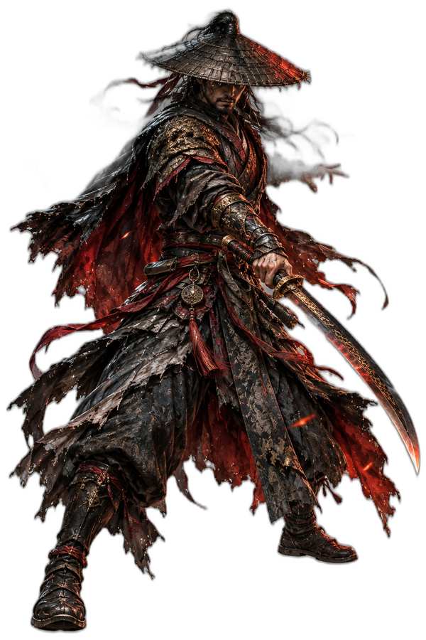

Phantom Blade Zero: il kungfupunk che punta tutto sul combattimento

Illustrazione originale ispirata al gioco, non artwork ufficiale.
Un action RPG wuxia che mette il combattimento al centro di tutto, con più di 30 armi da padroneggiare.
Analisi editoriale: dati e prezzi verificati sulle fonti ufficiali al 30/10/2026; prezzi indicativi, giudizi redazionali.
Phantom Blade Zero non nasconde la sua ambizione: mettere il combattimento al centro di tutto. Sei Soul, un guerriero con 66 giorni di vita, in un mondo wuxia fatto di assassini, maestri e cospirazioni. La storia parte da un tradimento e da una ferita al cuore; il resto è un percorso attraverso il Wulin.
Il gioco è sviluppato da S-GAME con Unreal Engine 5. È disponibile su PC via Steam ed Epic Games Store e su PS5. Le date cambiano leggermente: Steam indica il 28 ottobre, il sito ufficiale il 29; PlayStation Blog parla del 29 ottobre con il 28 ottobre negli USA e in alcune regioni.
Oltre 30 armi, 25 Phantom Edges
La varietà è il cuore del sistema. Ci sono più di 30 armi principali e 25 armi secondarie chiamate Phantom Edges. Puoi potenziarle, combinare accessori e cambiare build senza perdere i materiali investiti: il gioco permette di riforgiare e reinvestire.
Il combattimento è fatto di parate, schivate, contrattacchi e combo. Non è solo una questione di statistiche: la differenza la fanno il tempismo e la scelta dell'arma. Le tre difficoltà — Wayfarer, Hellwalker e Sixty-Six Days — permettono di calibrare la sfida. Wayfarer è pensata per chi vuole godersi la storia; Hellwalker alza l'intelligenza dei nemici; Sixty-Six Days è la modalità per chi cerca il massimo.
Fatto: Donnie Yen è creative consultant e presta volto e motion capture a Mó Yuan. La sua esperienza nel cinema di arti marziali si vede nella coreografia dei combattimenti.
Fatto: sulla pagina Steam, al 30/10/2026, risultano l'87% di recensioni positive su 2.276 recensioni in inglese e un Metacritic di 88.
Lettura redazionale: è il titolo più spettacolare dei tre, ma anche il più esigente. La produzione è alta e l'identità visiva è forte; la narrazione, secondo una parte della critica, non sempre tiene il ritmo del combattimento. Vale la pena approcciarlo per il sistema di combattimento, non solo per le scene cinematografiche.
Cosa serve per giocarlo su PC
- Minimi: GTX 1660 6 GB o RX 5500 XT 8 GB, 16 GB di RAM, 145 GB di spazio, SSD richiesto.
- Consigliati: RTX 3060 Ti 8 GB o RX 6700 XT 12 GB, 16 GB di RAM, 1440p/60 fps con upscaling.
È un gioco pesante: 145 GB di spazio e un SSD sono parte dei requisiti, non un consiglio. La build Media è il punto di partenza ragionevole; per il 4K serve la Ultra.
Nota pratica: l'italiano è incluso tra le lingue supportate su Steam (interfaccia e sottotitoli).
A chi è adatto
A chi ama gli action RPG tecnici, il cinema wuxia e i giochi in cui la padronanza delle armi conta più del livello. A chi vuole una sfida calibrabile. Meno adatto a chi cerca un'esperienza rilassata o un gioco narrativo senza combattimento.
Preferisci un action RPG che ti mette alla prova o uno più accessibile? Quale difficoltà sceglieresti?
Dove acquistare
Vedi Phantom Blade Zero su G2A →
Prezzo indicativo: 48,40 € su G2A · 59,99 € standard e 69,99 € Digital Deluxe su Steam. Aggiornato al 30/10/2026.
Fonti: sito ufficiale · Steam · PlayStation Blog · Metacritic PC